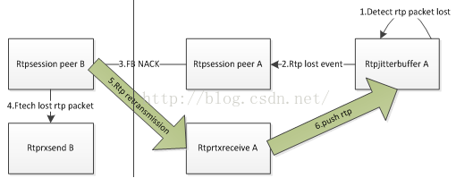
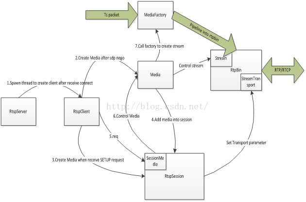

目录视图
目录视图 摘要视图
摘要视图 订阅
订阅1 Overview
Gstreamer是一款功能强大、易扩展、可复用的、跨平台的用流媒体应用程序的框架。
该框架大致包含了应用层接口、主核心框架以及扩展插件三个部分。
Fig 1.0Gstreamer
应用层接口主要是给各类应用程序提供接口如：多媒体播放器、流媒体服务器、视频编辑器等；接口的形式多样化，可以是信号、回调函数、函数调用等。
主核心框架就是流媒体的实际运行框架，其包含了媒体处理、内部消息处理、数据的网络传输、以及插件系统实现的功能等；主核心框架又包含了一系列的子模块称之为element，每个element完成一项单一的功能，通过Pipeline把其串联起来实现一条媒体流的实现。
扩展插件还是以主核心框架为基础，提供一些额外的服务，如：协议的组件、部分格式编解码的实现、以及第三方的一些Utility。核心框架会提供一些虚化的接口给各类插件，各类插件只需按照规则实现那些虚化的接口，核心框架就会具有相应的能力（类似父类和子类的关系）。
以Gstreamer为核心，构造了一套关于流媒体实时视频的获取、存储、转发综合方案，并实现了数据获取与转发相分离、支持多协议并发输出、低延迟、高可靠等特性。
该方案用到了Gstreamer的元素作为支撑，包括了数据的获取和转发两大功能体。因为获取到的数据要支持多路径转发，所以必须将其转换成ts包格式。
fig 1.1 module chart
2. 视频获取单元
总体功能：从IPC获取实时视频数据，可用于转发或存贮。
总体实现：视频获取单元用Gstreamer的一条Pipeline实现，包含如下元素：
rtspsrc: 连接rtsp 服务器，并获取RTP 包，所有行为遵守RFC2326；
rtph264depay: 从RTP 包中解出H264包，所有行为遵守RFC3984；
mpegtsmux: 把mpeg的传输流封装成ts包；
fig 2.0 video fetch pipeline
2.1rtspsrc
模块功能：rtspsrc用于连接rtsp Server（IPC端）并获取数据。
其做为一个SRC仅仅是用于接收数据，并不做任何处理直接交给下游模块。所以他的输入和输出数据都是RTP包。接收数据前，rtsp Session的建立是通过与对端交互SDP消息完成的，完全遵守了RFC2326。
用户层使用rtspsrc时，只需要正确配置所有控制参数，该模块就会完成如下功能：SDP消息交互，RTP stream的接收，RTP包的输出（PUSH mode）。同时，rtspSrc给应用层提供一系列接口，使其可以参与整个Session建立过程，这些接口都是以Callback形式给出。
handle-request : Gstreamer可以让应用去处理服务器的rtsprequest 和 response；
on-sdp:每收到sdp消息，Gstreamer可以让应用层增加处理；
select-stream: 每次Gstreamer对接收到的stream加以caps设定时，让应用层有机会处理；
如果应用层忽略这些Callback，那Gstreamer就会按照标准流程走下去。
下图中列出了rtspsrc支持的控制参数，包含了：底层的传输协议选择、发送队列缓存区的大小、是否支持丢包重传等参数。
把该模块加入Pipeline中并开启Pipeline，完成如下功能：
1. 与服务器交互SDP报文，建立rtsp session;
2. 通过Session获取RTP 流；
3. 通过PUSH的模式把RTP包交给下游模块；
fig 2.1 rtspsrc work scope
模块实现：Gstreamer
2.2 rtph264depay
模块功能：
1. 做为rtspsrc的下游模块，可以接收到rtp包，
2. 并遵循RFC3984的规范解包，解完的包会按照NAL的格式对齐；
3. NAL包以PUSH的模式交给下游模块。
模块实现：Gstreamer
2.3 mpegtsmux
模块功能：把媒体流数据（mpeg格式的）封装成ts包的格式并输出给下游模块。
模块可选的控制参数：
m2ts-mode：选择188字节或192字节的ts包；
prog-map：节目流映射；（此参数不明白）
pat-interval：发送ts包净荷是节目关联表的时间间隔；
pmt-interval：发送ts包净荷是单路节目复用信息的时间间隔；
alignment：发送给下游模块的每块Buffer的TS包的个数；
si-interval：发送Service Information的时间间隔；
模块实现：Gstreamer
2.4 appsink
模块功能：允许应用程序获取处理后的数据。
模块可选的控制参数：
drop：丢弃策略，当Buffer满了以后是否丢弃数据；
max-buffers：设定Buffer队列的个数；
GST_PAD_PROBE_TYPE_BUFFER：可以注册回调函数获取经过appsink的所有Buffer；
模块实现：Gstreamer
Appsink获取的Buffer都是ts包格式的，获取后有多种处理方式
1. 以ts文件的形式保存；
2. 以buffer的形式进行管理；
3. 直接丢给各个转发模块；
3 转发实体：
对于获取的视频数据有3种转发的方式
3.1 HLS转发
总体功能：
控制面，建立HttpServer，接受客户端的请求并给出回应；
数据面，通过Socket接口，把接收到的ts包Buffer传给客户端；
总体实现：与Gstreamer无关，HttpServer用Libevent实现；Figure 2-1 HLSSolution Service Flow
Step1 : 开启Gstreamer去捕获IPC的RtpStreaming并交给PipeLine，经过h264depay和Mpegtsmux 的处理后，AppSink的probe可以hook到ts packet Buffer ;
Step2: 开启HttpServer监听指定端口;
Step3：Client发送Get m3u8File Request，Server收到后回复200OK和相应m3u8文件；
Step4: Client根据m3u8文件里的ts文件列表RequestGET;（这里是segment00.ts）
Step5: Server收到segment00.ts文件请求后Response200 OK 和“Connection keep alive”;
Step6: HttpServer驱动Appsink 的Probe通过Socket把hook到的buffer实时往Client发送; （如果多个客户端，将轮询所有客户端进行转发）
Step7: Client侧的HttpClient收到Buffer后实时PUSH ts Buffer to Gstreamer Appsrc；
Step8: Client侧的Gstreamer的PipeLine经过Appsrc,tsdemux, h264parse, avdec_h264, glimagesink对live streaming media进行播放；
3.2 rtsp server 转发
总体功能：
控制面，构造rtsp server，负责与客户端的rtsp请求与回复；
数据面，构造rtp stream, 把上游输入的ts包buffer转换成rtp格式，并通过Rtsp协议发送给客户端；
总体实现：Gstreamer
fig 3.0 rtp stream produce
由Gstreamer构造的一条Pipeline，从上游的appsink接受数据，进行格式转换并交给rtsp server 发送出去。
3.2.1 Appsrc
模块功能：做为Pipeline的开始节点，允许应用程序往Pipeline“喂送”数据。
模块控制参数：
block: 每块推送buffer块的最大字节；
current-level-bytes：当前队列的大小；
is-live：当前推送的是否直播数据；
max-bytes：缓存队列的最大容量；
max-latency：流数据在该模块的最大延迟时间；
min-latency：流数据在该模块的最小延迟时间；该值设为-1表示无延时发送。
min-percent：设定队列缓存数据的比例，当缓存数据小于该值时appsrc向pipeline发出“need data”信号；
size：流媒体数据的字节数，一般用-1表示未知；
stream-type：流媒体类型，GST_APP_STREAM_TYPE_STREAM表示实时数据不支持seeking操作；
注册的信号：
“need data”：每当appsrc的Buffer需要数据时，该信号会被抛出，回调函数被触发；
“enough data”：每当appsrc的buffer即将溢出时，该信号会被抛出，回调函数被触发；
注册的接口：
“push buffer”: 应用程序需要往往appsrc喂数据，该接口可以被调用；
3.2.2 tsdemux
模块功能：mpegtsmux的逆操作，把ts包恢复成mpeg2格式。
模块实现：Gstreamer
3.2.3 h264parse
模块功能：解析H264流，输出数据为AU对齐的流
模块控制参数：
disable_passthrough: 为1表示强制按照h264规格解析输入数据，主要是针对一些不被信任的输入数据；为0表示根据标准行为去解析或不解析输入数据；一般选择0；
config-interval:发送PPS,SPS的时间间隔（SPS会被复用在数据流中）；
模块实现：Gstreamer
3.2.4 rtph264pay
模块功能：把H264 视频数据编码进RTP包（遵循RFC3984）
模块控制参数：
Mtu:包的最大字节数；
Pt：包负载的类型；
Ssrc：指定包的ssrc值，默认是随机值；
Timestamp-offset:时间戳起始值，默认随机值；
Sequencenumber-offset: sequence number的起始值，默认随机值；
Max-ptime:一个包含的视频最大长度（ns为单位），-1表示无限制，取决于MTU；
Min-ptime:一个包含的视频最小长度（ns为单位），-1表示无限制，取决于MTU；
Timestamp:最后一个包的时间戳；
Sequencenum:最后一个包sequence num ；
Ptime-multiple: buffer大小需是packet time的倍数；
config-interval:发送PPS,SPS的包的时间间隔，也就是IDR frame的时间间隔（SPS会被复用在数据流中）；
模块实现：Gstreamer
3.2.5 rtpbin
模块功能：rtpsession +rtpjitterbuffer + rtprtxsend + rtprtxreceive
Rtpsession:建立rtp session 并分配SSRC，接收发送RTP包，调度发送接收RTCP包，实现了RFC3550；以上行为需要基于RTSP Session的协商结果。
Rtpjitterbuffer：缓存数据流，根据配置等待需要重传的RTP包，并及时察觉未收到的RTP包触发rtpsession发送FBNACK(RFC4585),发送重传事件给 Rtprtxreceive；
Rtprtxsend：按照配置保存一定量的RTP包，收到rtpsession的重传指示，查找目标RTP包按照RFC4588的规范重新发送；
Rtprtxreceive：根据从Rtpjitterbuffer接受到的重传指示，按照RFC4588的要求，把重传流的SSRC2映射到主数据流SSRC1(RFC 4588)，把数据包交给下游的Rtpjitterbuffer；

Fig 3.1 Lost rtp packet retransmission with both peer
如果不考虑重传，rtpbin的功能就等同于rtpsession(RFC 3550)
rtpsession控制参数：
Bandwidth：RTP Session的带宽；
Internal-session:
ntp-ns-base:基于running_time0的网络基准时间；
num-active-sources：
num-sources：
rtcp-fraction：RTCP的带宽；
sdes:数据加密算法的选择；
rtcp-rr-bandwidth：用于接收RTCP的带宽；
rtcp-rs-bandwidth：用于发送RTCP的带宽；
use-pipeline-clock：用Pipeline的时钟去设定RTCP SR的ntp；
probation：为了判断Source是否有效的，用于试用的连续报文个数；
rtp-profile：一般是视频音频类型，GST_RTP_PROFILE_AVP；
rtpbin控制参数：
do-lost：是否丢包后往下游发送事件；
latency：jitterbuffer中缓存的buffer长度；
ignore-pt：是否忽略pt值；
autoremove：自动删除超时的数据源；
JitterBufferMode：控制jitter里buffer和时间戳的模式；
ntp-sync：buffer里的时间是否和ntp同步；
rtcp-sync：rtcp包里的时间和ntp的同步模式；
rtcp-sync-interval：rtcp数据的发送间隔；
drop-on-latency：超过jitterbuffer缓存区范围是否丢弃；
do-sync-event：是否可以向流的下游模块发送同步事件；
do-retransmission：是否支持rtp包的重传；
模块实现：Gstreamer
rtsp server
模块功能：
构建rtsp server，与客户端进行信令交互，控制数据收发；
模块工作原理：

控制层面：
1. 服务器端每接入一个客户connection就会创建一个Client对象，所有的rtsp信令层的交互都由Client对象处理；
2. Client和客户端SDP协商完毕会创建Media对象；
3. Client收到SETUP请求会创建Session，并把Media加入到该Session；
4. 所有的控制层面的信令都由Client-〉Session-〉Media去处理；
5. Media会通过Factory接口创建Pipeline，并把Pipeline和RtpBin连接生成Stream对象；
6. Rtsp Session通过StreamTransport对象把数据通道的一些参数交给Stream；
7. Stream建立数据传输的通道；
转发层面：
1. Stream建立并收到对端的PLAY请求，RtpBin会向Pipeline的源头Appsrc要数据；
2. Appsrc产生“need_data”的信号；
3. 上游的appsink模块会把数据（ts packet）buffer，feed给Appsrc；
4. ts包经过Pipeline的处理组成RTP包到达rtpbin；
5. rtpbin，最主要的是rtpsession会把收到的rtp包交给udpsink模块做下一步发送；
模块实现：Gstreamer
3.3 rtmp 转发
总体功能：
控制面，构造rtmp server；
数据面，构造rtmp stream,把接收到的ts buffer转换成rtmp stream格式,交给rtmp服务器发送给客户端；
实现：控制面由SRS实现，数据面由Gstreamer实现；
Fig3.3 ts transfer to rtmp stream
encodebin:把h264数据转换成flv格式，由Gstreamer实现；
rtmpsink:把flv数据转换成rtmp stream并传送给rtmpserver，由Gstreamer实现；
rtmpserver:模块把rtmp stream按rtmp协议转发给客户端；
3.4 Service model
fig 3.4 service model
1. 一台Server可在多个IPC上获取数据；
2. 获取的数据可以多路协议转发；
3. 每路协议支持多客户端实时转发；
4 Prototypeverification
经过原型验证，RTMP、HLS和RTSP的转发，在网络效果良好的情况下经过参数合理配置，可以达到低延时的效果（300ms）。
RTMP、HLS的底层传输都是TCP连接，提供了可靠的传输环境；Rtsp Server的RTP可选UDP，并引入RTP的重传机制，也可保证传输质量。
因为是实时编码，所以IPC输出的H264是不包含B帧的，Gstreamer为解析H264的B帧所设定的700ms的帧同步延时可以省略，提高了实时性。